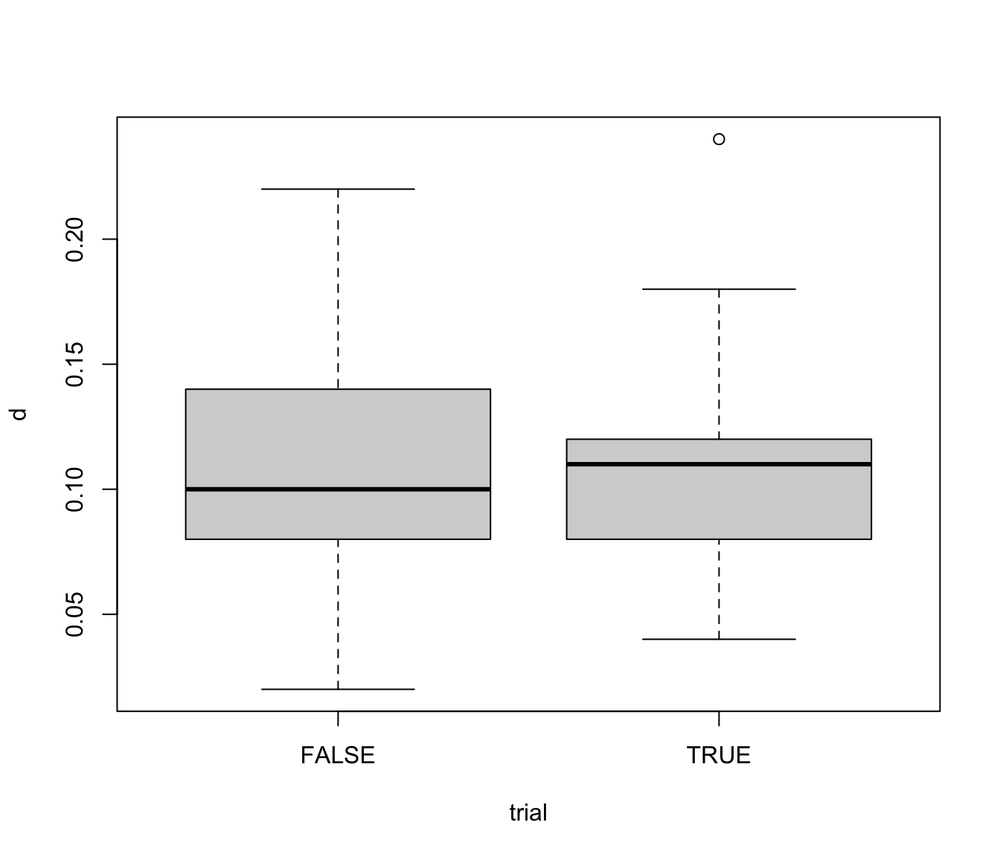

orangejuice2.RdA full description of the problem is given in orangejuice.
This dataset contains samples taken after the machine adjustment was made.
data(orangejuice)
A data frame with 64 observations on the following 4 variables:
number of defectives
sample sizes
trial samples (TRUE/FALSE)
Montgomery, D.C. (1991) Introduction to Statistical Quality Control, 2nd ed, New York, John Wiley & Sons, pp. 155--159.
data(orangejuice2) orangejuice2 <- transform(orangejuice2, d = D/size) describe(orangejuice2, by = trial)#> ── trial = FALSE ─────────────────────────────────────────────────────────────── #> Obs Mean StdDev Min Median Max #> sample 40 74.500 11.69045 55.00 74.5 94.00 #> D 40 5.450 2.25263 1.00 5.0 11.00 #> size 40 50.000 0.00000 50.00 50.0 50.00 #> d 40 0.109 0.04505 0.02 0.1 0.22 #> #> ── trial = TRUE ──────────────────────────────────────────────────────────────── #> Obs Mean StdDev Min Median Max #> sample 24 42.5000 7.07107 31.00 42.50 54.00 #> D 24 5.5417 2.14637 2.00 5.50 12.00 #> size 24 50.0000 0.00000 50.00 50.00 50.00 #> d 24 0.1108 0.04293 0.04 0.11 0.24